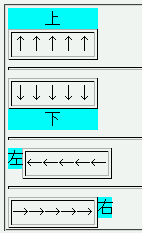
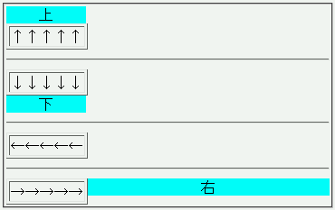
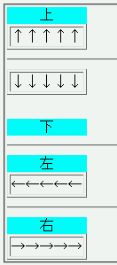

caption-sideプロパティを使用して表題の位置を指定することができるが、表の上以外に表題を置くと正しい位置に表示されない。
<table border="1"> <caption style="caption-side:top;">上</caption> <tr><td>↑↑↑↑↑</td></tr> </table> <table border="1"> <caption style="caption-side:bottom;">下</caption> <tr><td>↓↓↓↓↓</td></tr> </table> <table border="1"> <caption style="caption-side:left;">左</caption> <tr><td>←←←←←</td></tr> </table> <table border="1"> <caption style="caption-side:right;">右</caption> <tr><td>→→→→→</td></tr> </table>
| ↑↑↑↑↑ |
| ↓↓↓↓↓ |
| ←←←←← |
| →→→→→ |
上下左右に表題を置いています。
Moz1.4RC2での表示
Opera6.06での表示
Opera7.11での表示
Opera6で右に置いた表題が表から離れて見えるのは表題要素にwidthプロパティを指定していない（auto値になっている）ことが原因です。表題要素にwidthプロパティでauto以外の値を指定することで見た目の違いを抑えることができます。なお、CSS2勧告 17.4.1によるとMozillaの実装もOpera6の実装も仕様違反ではありません。
Opera6で左に置いた表題が消える現象は表を右寄せする（margin-left:auto; margin-right:0;）ことで回避できます。しかし、Opera7.0で左右に置いた表題が消える現象や下に置いた表題が表から離れてしまう現象は回避できないようです。
Opera6.06、Opera7.03、Opera7.11で不具合の発生を確認しました。